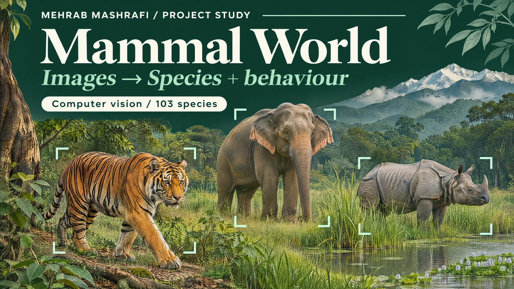

Mammal World · Computer vision
Mammal World: from wildlife images to predictions
I built a computer vision experiment around 103 mammal species from the Indian subcontinent, combining species identification with an exploration of visible animal behaviour.

- My role
- My contribution: species research, image curation, transfer learning and demonstration
- Tools and scope
- 103 species · ResNet34 and ResNet101 · Fastai · Streamlit
- Context
- Personal research and portfolio project
01 / The situation
Start with the animals and their labels
Species identification depends on more than collecting a folder of animal pictures. I needed a defined set of mammals, reference information and images that matched the intended labels before I could train a useful classifier.
I focused on mammals from the Indian subcontinent. The project explored whether one image workflow could return a species prediction and a behaviour prediction, while keeping the data preparation visible.
02 / My role
Curate the data before training
I collected mammal records from the India Biodiversity Portal and checked species information against reference sources including Animal Diversity Web. I then gathered and cleaned imagery for 103 selected species, organising it into labelled directories.
I collected descriptive information, taxonomy and habitat details alongside the images. I also explored image augmentation, including simulated nighttime imagery. That expanded the training material; it did not establish performance on real nighttime wildlife photographs.
From curated images to species and behaviour predictions
- 01
Species references
- 02
Curated mammal images
- 03
Behaviour model predictions
- 04
Species + behaviour training
- 05
Image inference
Behaviour predictions generated by a model remain distinct from expert observed labels.
03 / How it works
Connect species and behaviour carefully
I trained a behaviour model using transfer learning with ResNet34, then applied it to the main image dataset. I incorporated those predicted behaviour labels into the later workflow and used ResNet101 for the main model.
This created an important distinction: a behaviour label supplied by a model is a prediction, not a verified observation. That distinction matters when interpreting the later model outputs or considering a new use for the dataset.
04 / The outcome
An inspectable model and an image demonstration
The project brought reference collection, image curation, training and inference into one workflow. I built demonstrations on Hugging Face and Streamlit so someone could explore the model without running the training notebook.
This is a research demonstration. A prediction can help someone explore an image, but it does not establish a conservation outcome or replace expert identification. Independent field imagery would need its own evaluation.
Watch the project
Watch the Mammal World walkthrough
I present the dataset, modelling choices and image prediction demonstration. Watch on YouTube ↗
05 / Explore the work
Inspect the experiment
Have a dataset that needs a clearer path to use?
Tell me what you want to compare or predict, where the records come from and who will use the result.
Discuss your project Email meProject by Mehrab Mashrafi. Updated .